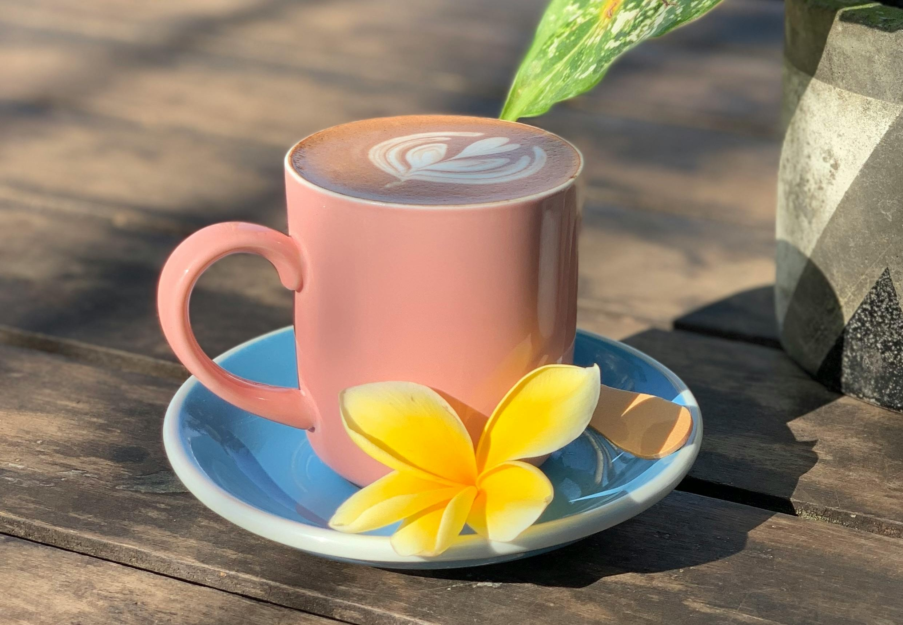

Welcome to Island Brews Coffee!

About Island Brews
Island Brews Coffee was founded in 2019 with a simple mission: bring the taste of Hawaii to every cup. We partner directly with small farms on the Big Island to source 100% Kona coffee beans. Every batch is roasted fresh at our local roastery and brewed with care by our trained baristas.
What started as a small cart at the farmer’s market has grown into a beloved neighborhood gathering spot. But our commitment to quality and community hasn’t changed.
Our Values
- Sustainability — Eco-friendly packaging and practices
- Community — Supporting local farmers and artists
- Quality — Small-batch roasting for peak freshness
- Aloha Spirit — Warm, welcoming atmosphere for everyone
From Farm to Cup: Our Process
- Beans are hand-picked at peak ripeness on Hawaiian farms
- Sun-dried using traditional methods for 7-10 days
- Small-batch roasted weekly at our local roastery
- Brewed fresh for every customer
Fun Facts About Island Brews
- We go through 200 pounds of beans per week
- Our walls feature rotating work from local artists
- Our signature drink is the “Volcanic Mocha” with dark chocolate and Hawaiian chili
- We’ve been voted “Best Coffee Shop” three years running
Learn More
Meet our Kona Coffee Farmers